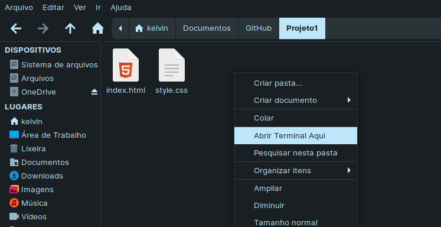

Git
O GIT é um sistema de controle de versão de código aberto. Foi desenvolvido por Linus Torvals (também criador do kernel Linux), e está sendo mantido por Junio Hamano. Algumas de suas funcionalidades são:
- permite aos desenvolvedores ter uma infinidade de ramos de código completamente independente. Criação, exclusão e fusão desses ramos é simples e não leva tempo.
- usa um modelo de dados que ajuda a garantir a integridade criptográfica de qualquer coisa presente dentro de um repositório. Cada vez que um arquivo é adicionado ou um commit é feito, suas somas de verificação são geradas. Da mesma forma, eles são recuperados através de suas somas de verificação também.
Instalação
Linux
Sistemas Debian e derivados (apt)
sudo apt-get update
sudo apt-get install git
Fedora (dnf e yum)
sudo dnf install git
sudo yum install git
Configuração
Verifique se a instalação foi bem sucedida com:
git --version
Por fim, defina o usuário e email:
git config --global user.name "Kelvin Ribeiro"
git config --global user.email "exemplo@email.com"
Antes de começar
Utilizando distros Linux, há alguns comandos que podem ser úteis para manejar os arquivos e diretórios, facilitando o uso do Git:
-
cd (change directory): muda para o diretório especificado
- cd .. (retorna para o diretório anterior)
- mkdir (make directory): cria uma pasta
- touch "nome do arquivo": cria uma arquivo com o nome especificado
- rm (remove): remove diretórios ou arquivos
Usando o Git
git init
O git init serve para iniciar um repositório. Pelo terminal, você deve navegar o diretório em que o projeto se encontra e executar o comando:
Supondo que você tenha criado a pasta "GitHub" em "Documentos", seu diretório ficará assim:
/home/$USER/Documentos/GitHub/
Agora, dentro dessa pasta, cria-se outra, chamada "Projeto1", contendo uma página HTML com CSS. Navegue pelo terminal:
cd /home/$USER/Documentos/GitHub/Projeto1
Ou use a interface gráfica:
Por fim execute o comando:
git init
git add
O repositírio foi criado, mas nenhum arquivo está sendo rastreado. Para adicioná-los ao repositório, utilize o comando:
git add .
Ele adcionará TODOS os arquivos da pasta, se você quiser adicionar um arquio em específico, utilize git add "nome do arquivo"
git commit e git push
O repositório foi iniciado, os arquivos foram adcionados, mas as modificações não foram salvas.
Para que as mudanças sejam consideradas e atualizadas no repositírio, é necessário executar os comandos:
git commit –m “Mensagem para o commit”
git push
Logo em seguida, será necessário digitar seu usuário e senha.
Branches
O objetivo principal de um branch é desenvolver novas funcionalidades, mantendo-os isolados uns dos outros. O branch padrão em qualquer projeto é sempre o master branch. Tantos branches quanto necessários podem ser criados e eventualmente mesclados ao master branch.
Um novo branch pode ser criado usando o seguinte comando:
git checkout -b feature_n *
feature_n é o nome do branch.
Se você deseja retornar ao master branch, o seguinte comando pode ser usado:
git checkout master
merge
Para mesclar outro branch (dar um merge) no atualmente ativo, use:
git merge feature_n
Texto baseado no Tutorial da Hostinger